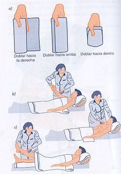
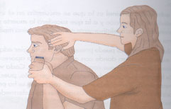

|
- Protocolo de actuación.
- Preparar el equipo y el agua a la temperatura apropiada. Aplicar
las normas generales descritas.
- Lavarse las manos.
- Explicar al usuario el procedimiento, pidiendo su colaboración.
- Situar el equipo junto a la cama del usuario.
- Ponerse los guantes.
- Asegurarse de que la temperatura ambiente de la habitación
es adecuada y que no hay corrientes de aire. Si no existe suficiente
intimidad para el usuario, colocar un biombo.
- Ofrecer la cuña al usuario antes de empezar.
- Retirar la ropa que cubre la cama y colocar en su lugar una manta
de baño. Si es necesario, se colocará otra debajo
para preservar la cama de la humedad.
- Desnudar al usuario, que estará en decúbito supino,
si no hay contraindicaciones. Introducir la ropa sucia en una bolsa
o saco que estará en el suelo, junto al pie de la cama, sin
hacer maniobras bruscas.
|
|
 |
| |
- El lavado se hará en el siguiente orden:
|
| |
1. Afeitado;
en el caso de los varones, si pueden, lo hacen ellos mismos.
Si no, se avisa al peluquero (en algunas ocasiones lo realiza
el auxiliar de enfermería).
2. Ojos (del ángulo
externo al interno).
3. Cabello.
4. Cara y orejas.
5. Cuello y hombros.
6. Brazos, manos y axilas.
7. Tórax y mamas.
8. Abdomen.
9. Piernas y pies.
10. Espalda y nalgas.
11. Región genital,
debe hacerse hacia abajo y de delante hacia atrás. |
|
 |
|
|
|
|